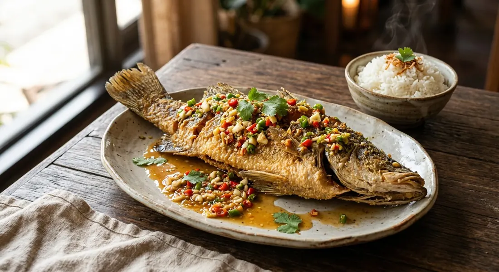

A whole fish fried until the skin shatters, and a mortar-pounded sauce of garlic, fresh chilli and coriander root — the Isaan way with a name that started life meaning something far plainer.

Kapook's editors unpack the name: แป๊ะ (pae) means white, or plain, and ซะ (sa) means boiling something in plain water or stock and ladling the liquid over it — a Teochew kitchen technique, not a dish. The plate that kept the name is the old Chinese one: a whole snakehead steamed and laid on cabbage, drowned in a light, sour-sweet broth of pickled plum, pickled garlic and ginger, eaten with a fermented soybean dip on the side.
Then the name ran loose. The version that dominates Thai restaurant menus today is a whole fish deep-fried until the skin crackles, then drowned in a pot of แกงส้ม sour curry — the version Kapook itself describes as the recipe being adapted to Thai tastes. And in Isaan, แป๊ะซะ means something else again: the sauce. Garlic, fresh chilli and coriander root, pounded in a mortar with roasted peanuts — sharp, salty, faintly sweet — served beside a fried or grilled fish. Same words, three dishes, and every one of them worth eating.
The recipe below is the Isaan way — the deep-fried fish with the pounded sauce — with the other two families written out in full, because the Thai sources do not agree, and neither should a page that pretends they do.
| Thai | English | Amount |
|---|---|---|
| ปลาช่อน / ปลากะพง | Whole snakehead, sea bass or tilapia, cleaned and scored | 1 (700–800 g) |
| น้ำมันพืช | Oil, for deep-frying | enough to cover |
| พริกขี้หนูสด | Fresh bird's eye chillies | a good handful |
| กระเทียม | Garlic | a little |
| รากผักชี | Coriander roots | 2–3 |
| ถั่วลิสงคั่ว | Roasted peanuts | a handful |
| ซอสพริก | Thai sweet chilli sauce | to taste |
| น้ำปลา | Fish sauce | to taste |
| น้ำมะนาว | Lime juice | to taste |
| น้ำตาลทราย | Sugar | only if needed |
| น้ำต้มสุก (เย็น) | Cooled boiled water | to thin |
The Pantip thread that this sauce comes from gives no quantities — its cooks season by taste, which is how the sauce behaves. The Chinese pot (Kapook): a 700–800 g snakehead steamed 8–10 minutes, laid on cabbage, drowned in a litre of stock boiled with 3–4 pickled plums and 3 tablespoons of their brine, 3 heads of pickled garlic with 1–2 tablespoons of its juice, shredded ginger, a tablespoon of ground white pepper, light soy and a little rock sugar — celery, spring onion and sliced chillies scattered on top. The sour-curry pot (Aroifin): a fried whole fish in a hot pot with 150 g of แกงส้ม paste — Aroifin boils a second, smaller fish and pounds its flesh into the paste — seasoned with 2 tbsp palm sugar, 1 tbsp white sugar, 6 tbsp fish sauce, ½ tsp salt and 12 tbsp tamarind water, over blanched white cabbage, yardlong beans and lotus stems.
What แป๊ะซะ even is. Kapook traces the name to the Teochew technique — plain-boiled, stock-ladled — and then spends its own intro explaining that the classic steamed fish in pickled-plum soup and the fried fish under แกงส้ม sour curry share the name while being completely different dishes. The Pantip thread opens on the same confusion, because its version is neither: in Isaan, แป๊ะซะ is the dipping sauce.
The sauce. Three camps. Kapook and Cookpad build the Chinese sauce: pickled plum, pickled garlic, ginger, a whisper of sugar, over a steamed fish. Wongnai and Aroifin go Thai: แกงส้ม paste, tamarind water, palm sugar, poured over a fried fish. Pantip goes Isaan: fresh chillies, garlic and coriander root pounded with roasted peanuts, seasoned with sweet chilli sauce, fish sauce and lime. Even inside the Pantip thread there are factions — an old tamarind-and-palm-sugar version bound with pounded roasted peanuts and boiled egg yolk, a pickled-garlic version, and the fresh-chilli one above.
The fish. Kapook, Wongnai and Aroifin all use ปลาช่อน, the snakehead — the classic. Cookpad uses ปลาทับทิม, the red tilapia. Aroifin goes further and boils a second, smaller fish to make the stock for the sauce, then pounds its flesh into the curry paste.
How the fish is cooked. Steamed 8–15 minutes (Kapook, Cookpad), deep-fried until crisp (Wongnai, Aroifin, and Kapook's description of the modern restaurant version), or grilled — the fish the Isaan sauce is most often served beside. The name travels; the cooking doesn't.
The savoury backbone. Wongnai's sour curry is built on a Knorr chicken stock cube. Kapook's broth is soy-based and its editors warn not to salt it early, because the pickled plums give up more salt as they sit. The Pantip sauce uses fish sauce and sweet chilli sauce. Three different answers to the same question.
This recipe is translated from the following Thai-language sources. Where they disagree, we've said so.
1. Kapook Cooking — "ปลาช่อนแป๊ะซะ สูตรอาหารจีนโบราณ น้ำซุปเปรี้ยวหวาน ซดร้อน ๆ อร่อยสดชื่น" (the name's etymology and the classic pickled-plum pot; also describes the modern sour-curry version) — cooking.kapook.com
2. Pantip — "ขอสูตรน้ำจิ้มแป๊ะซะ อีสาน" topic D12995464 (the garlic, chilli and coriander sauce used here, with its tamarind and pickled-garlic cousins) — topicstock.pantip.com
3. Aroifin — "แป๊ะซะปลาช่อน เนื้อปลาฟูกรอบ แกงส้มเปรี้ยวหวาน อร่อยถึงใจ" (the deep-frying technique used here; the fish-stock paste trick; the sour-curry pot) — aroifin.com
4. Wongnai — "แป๊ะซะปลาช่อน" by Nattawut Saenkham (the fried fish with แกงส้ม and the chicken-stock-cube sauce) — wongnai.com
5. Cookpad — "แป๊ะซะปลาทับทิม" by Khanut Bangyeekhen (the tilapia pot with pork belly and Chinese wine) — cookpad.com